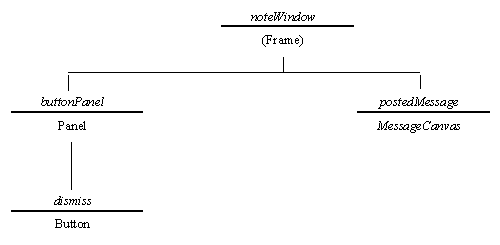

The instance hierarchy for an instance of the NoteWindow class is shown in Figure 3.5.

Figure 3.5 The NoteWindow instance hierarchy.
This hierarchy is very similar to that of the StikNoteWindow hierarchy shown in Figure 3.4. The root of the hierarchy, shown as noteWindow, is not an application in its own right but only a separate top level window of the StikNote application. Consequently it is extended from the Frame class not the Applet class. The other difference is that above the buttonPanel an instance of the MessageCanvas class, called postedMessage, is required. The MessageCanvas class is a specialized extension of the Canvas class whose implementation will be described below. Briefly it constructs a Canvas which is just large enough to display the text passed to it and arranges for it to be shown. The implementation of the NoteWindow class, as far as the start of its constructor, is as follows.
0001 // Filename NoteWindow.java.
0002 // Provides the NoteWindows for the StikNote applet.
0003 //
0004 // Written for the JI book, Chapter 3.
0005 // Fintan Culwin, v 0.2, August 1997.
0006
0007 package StikNote;
0008
0009 import java.awt.*;
0010 import java.awt.event.*;
0011
0012 import MessageCanvas;
0013
0014
0015 class NoteWindow extends Frame
0016 implements ActionListener {
This class also declares itself to be a non-public member of the StikNote package, but the MessageCanvas class imported on line 0012 is not. This is because it is recognized that the MessageCanvas class is capable of being reused in a number of different interface components, as will be demonstrated, and so should not be thought of as associated with any particular package.
The declaration of the NoteWindow class, on lines 0015 and 0016, indicates that it implements the ActionListener interface as it will respond itself to presses of its own "OK" button, as described below. The implementation of its constructor is as follows.
0019 protected NoteWindow( String message,
0020 Component itsParent) {
0021
0022 Button dismissButton;
0023 Panel buttonPanel = new Panel();
0024 MessageCanvas postedMessage;
0025
0026 Point itsParentsLocation;
0027 Dimension itsParentsSize;
0028 Point itsLocation;
0029 Dimension itsSize;
0030
0031 this.setTitle( "Stik Note");
0032 this.setFont( itsParent.getFont());
0033 this.setBackground( itsParent.getBackground());
0034 this.setForeground( itsParent.getForeground());
0035
0036 postedMessage = new MessageCanvas( message);
0037 this.add( postedMessage, "Center");
0038
0039 dismissButton = new Button( "OK");
0040 dismissButton.addActionListener( this);
0041 buttonPanel.add( dismissButton);
0042 this.add( buttonPanel, "South");
0043 this.pack();
0044
0045 itsParentsLocation = itsParent.getLocationOnScreen();
0046 itsParentsSize = itsParent.getSize();
0047 itsSize = this.getSize();
0048 itsLocation = new Point();
0049
0050 itsLocation.x = itsParentsLocation.x +
0051 (itsParentsSize.width/2) -
0052 (itsSize.width/2);
0053 itsLocation.y = itsParentsLocation.y +
0054 (itsParentsSize.height/2) -
0055 (itsSize.height/2);
0056
0057 this.setLocation( itsLocation);
0058 this.setVisible( true);
0059 } // End NoteWindow constructor.
This method can be divided into two parts. The first part from lines 0019 to 0042 constructs the interface within the Frame window. The second part of the method, from lines 0043 to 0058, is concerned with positioning the window on the desktop centered within the main application window.
The constructor commences, on lines 0031 to 0034, by configuring its physical appearance. As this class extends the Frame class it has a separate top-level window and, as mentioned above, does not inherit its physical attributes from its instance parent, as the StikNoteWindow class did. The Applet passed in its second argument, when its constructor was called in the StikNote class, is received by this class as a Component instance. On lines 0032 to 0034 the font, background and foreground attributes are obtained from itsParent, using only Component methods, and installed into this Component using the equivalent attribute setting methods. Before this, on line 0031, the title for the Frame is specified as "Stik Note", using the Frame setTitle() method, as can be confirmed in Figure 3.1.
The constructor continues, on line 0036 and 0037, by creating a new instance of the MessageCanvas class and adding it to the NoteWindow's central location. There is no need to explicitly specify a BorderLayout management policy as this is the default policy for all Frames. Lines 0039 to 0042 continue assembling the interface as required from the instance diagram in Figure 3.5 and registering the NoteWindow instance itself as the listener for the ActionEvents generated by the dismissButton.
Once this has been accomplished, on line 0043, the Frame's pack() method is called to perform the layout negotiations for the Frame and so establish its size, although this does not result in the interface becoming visible. Lines 0045 to 0055 are concerned with ensuring that when the NoteWindow is shown to the user it is centered within the main StikNote window.
To accomplish this first, on line 0045, the location and size of itsParent is obtained using the Component getLocationOnScreen() method. This method returns an instance of the Point class. This is a simple class which contains two public primitive int instance attributes called x and y. As public attributes their values can be set, or obtained, directly by referencing their name rather than by using methods of the class. This technique is used by a small number of Java pre-supplied classes but, in general, this technique should not be used. Instance attributes should always be declared private and methods to set and obtain their value supplied.
On line 0046 the size of the main window is obtained by use of its getSize() method. This method returns and instance of the Dimension class. Like the Point class, the Dimension class contains two public instance attributes, this time called width and height. The constructor continues by determining the size of the new NoteWindow using its own getSize() method.
Knowing the size and location of the main window, and the size of the new NoteWindow, it requires some simple arithmetic to calculate the location on the screen where the new window has to be positioned in order for it to be centered within the main window. This is accomplished on lines 0050 to 0055 with the x and y co-ordinates calculated stored as the x and y public attributes of a new instance of the Point class, called itsLocation, constructed on line 0048.
This Point instance is then passed as an argument to the NoteWindow's setLocation() method, on line 0057, causing the new window to the positioned. The NoteWindow is then made visible by calling its setVisible() method, with the argument true, as the constructor's final step on line 0058. If this positioning of the NoteWindow were not done the location of the NoteWindow on the desktop could not be guaranteed and the window manager might place it anywhere, at its discretion.
It might seem that devoting the majority of the effort in this constructor to the physical appearance of the interface and the location on the screen where it will appear is overkill. For example the note could appear anywhere on the screen and the user can then drag it to where they want it, as they probably will do anyway. However paying attention to details such as this differentiates excellent interfaces from good interfaces: an interface design principle known as details matter.
Design Advice
Details matter! Once the essential functionality of the application is assured, users will judge an interface on the care which has been taken to enhance its usability and aesthetic appeal.
The final method of the NoteWindow class is the performAction() method which will be called when its "OK" button is pressed. It should result in the NoteWindow being removed from the desktop and being destroyed, and is implemented as follows.
0062 public void actionPerformed( ActionEvent event) {
0063 this.dispose();
0064 } // End actionPerformed.
0065 } // End NoteWindow.
The dispose() method of the Frame class called on line 0063 results in the Frame and all its contents being removed from the desktop and destroyed. This method is encapsulated within the NoteWindow class rather than being included within the StikNotet's performAction() method as it is seen as being totally the concern of the NoteWindow, having no effects upon any other of the application's components.